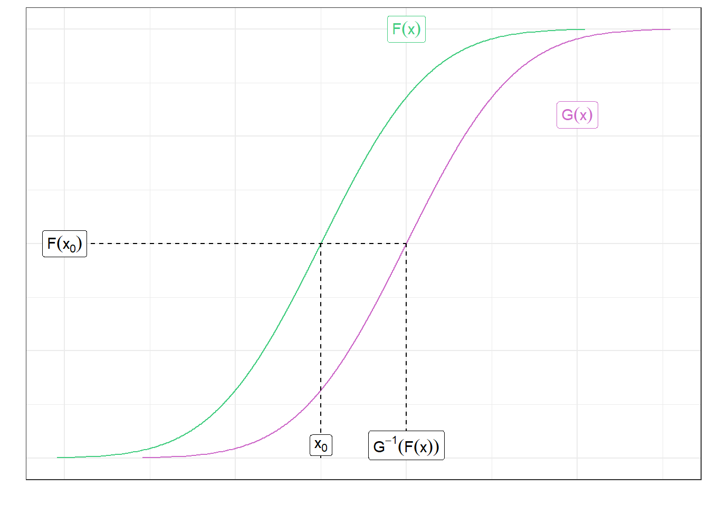

2 Introduction
$$ % mathbf: % Produces bold, upright (roman) characters. % Only works reliably on Latin letters (A-Z, a-z) and a few uppercase Greek letters % % boldsymbol % Preserves the original italic or slant shape of the math symbol while making it bold. % Works on Latin letters, Greek letters (both upper and lower case), % and most mathematical symbols (like , , ).
$$
Will need to redo the headings on this part.
2.1 Location Functional
2.1.1 Mean Location Functional
Some of the math isn’t described that well. It’s basically noting that if a RV is location-shifted to be larger, then the CDF at a given point will be smaller. As shown below.
2.1.2 Pseudo-median Location Functional
For showing Example 1.3, do this in reverse:
\[ \begin{align*} 2\dfrac{y-b}{a} - z &= \dfrac{2y-2b}{a} - \dfrac{x-b}{a} \\ &= \dfrac{2y-2b}{a} - \dfrac{x-b}{a} \\ &= \dfrac{2y-2b - x + b}{a} \\ &= \dfrac{2y -b - x + b}{a} \end{align*} \]
2.2 Geometry and the Location Model
2.2.1 Pitman Regularity
Defined on page 23 of Hettmansperger & McKean.
An estimating function \(S(\theta)\) is Pitman Regular if the following four conditions hold.
- Condition 1: \(S(\theta)\) is non-increasing in \(\theta\).
- Condition 2: Let \(\bar{S}(\theta) = S(\theta)/n^{\gamma}\) for some \(\gamma > 0\), then:
- There exists a function \(\mu(\theta)\) such that:
- \(\mu(0)=0\)
- \(\mu'(0)\) is continuous at 0 and \(\mu'(0) > 0\)
- \(\bar{S}(\theta) \stackrel{P_{\theta}}{\rightarrow} \mu(\theta)\) or \(E_{\theta}[ \mu(0)] = \mu(\theta)\)
- There exists a function \(\mu(\theta)\) such that:
- Condition 3: For any \(B>0\), the following holds:
\[ \underset{|b|\leq B}{\sup} \left| \sqrt{n}\bar{S}\left(\dfrac{b}{\sqrt{n}}\right) - \sqrt{n}\bar{S}(0) + \mu'(0)b \right| \stackrel{P}{\rightarrow} 0 \]
- Condition 4: There is a constant \(\sigma(0)\) such that:
\[ \sqrt{n}\left[ \dfrac{\bar{S}(0)}{\sigma(0)} \right] \stackrel{\mathcal{D}_{0}}{\rightarrow} N(0,1) \]
When satisfied, \(c = \mu'(0)/\sigma(0)\) is the efficacy of \(S(\theta)\).
2.2.1.1 Proof for \(L_{1}\)-norm
Assume that \(X\) follows a (symmetric?) distribution with \(f(0)>0\).
The \(L_{1}\) norm (dispersion function) is defined as:
\[ D_{1}(\theta) = \sum |x_{i} - \theta| \]
and the gradient function is:
\[ S_{1}(\theta) = \sum \text{sgn}\left( X_{i} - \theta\right) \]
Let \(\gamma = 1\), which makes \(\bar{S(\theta)} = S_{1}(\theta) / n\).
Condition 1: Non-increasing - As \(\theta\) increases, \(S_{1}(\theta)\) decreases.
Condition 2: Mean Function
\[ \begin{aligned} \mu(\theta) &= E_{\theta}\bar{S}_{1}(0) \\ &= E_{\theta}[ \text{sgn}(X_{i}) ] \\ &= E_{0}[ \text{sgn}(X_{i}+\theta)] \\ & \:\:\:\:\:\: \text{(see definition of location functional, pg 3)}\\ & \:\:\:\:\:\: \text{(or shift theorem 1.3.1, pg 7)}\\ &= P_{0}( X+\theta > 0) - P_{0}( X+\theta < 0) \\ &= [ 1 - F(-\theta)] - [F(-\theta)] \\ &= 1 - 2F(-\theta) \end{aligned} \]
So \(\mu'(0) = 2f(0 )> 0\)
Condition 3: Convergence … maybe? Not sure proper term.
\[ \bar{S}_{1}(b/\sqrt{n}) - \bar{S}_{1}(0) = -(2/n)\sum I( 0 < X_{i} < b/\sqrt{n}) \]
Note when
\[ \begin{array}{lcc} \mbox{X-value} & \bar{S}_{1}(b/\sqrt{n}) & \bar{S}_{1}(0) \\ -\infty < X < 0 & -1 & -1 \\ 0 < X < b/\sqrt{n} & -1 & 1 \\ b/\sqrt{n} < X < \infty & 1 & 1 \\ \end{array} \]
Rather, this applies to the individual signs, but carries over to the sums. Important bit is that the two are equal except on the interval between \(0\) and \(b/\sqrt{n}\), and that on that interval the difference is \(1 - (-1) = 2\).
Therefore, this is the sum of independent Bernoulli variables, so:
\[ \begin{aligned} n V\left[ \bar{S}_{1}(b/\sqrt{n}) - \bar{S}_{1}(0) \right] &\leq 4 P( 0 < X_{1} < b/\sqrt{n}) \\ &= 4[ F(b/\sqrt{n} ) - F(0) ] \\ &\rightarrow 0 \end{aligned} \]
We can look at the variance here between of Theorem 1.5.6 (page 24). The variance going to 0 implies condition 3 from Pitman Regularity will hold.
Condition 4: Variance
Variance of sign process is \(V_{0}[ \text{sign}(X_{i})] = E_{0}[ \text{sign}^{2}(X) ] = 1\)
So \(\sigma(0)=1\), therefore \(\sqrt{n}\bar{S}_{1}\) converges in distributuon to \(Z \sim N(0,1)\) by the CLT.
Therefore the \(L_{1}\) gradient process \(S(\theta)\) is Pitman Regular and has efficacy \(c_{L_{1}} = 2f(0)\).